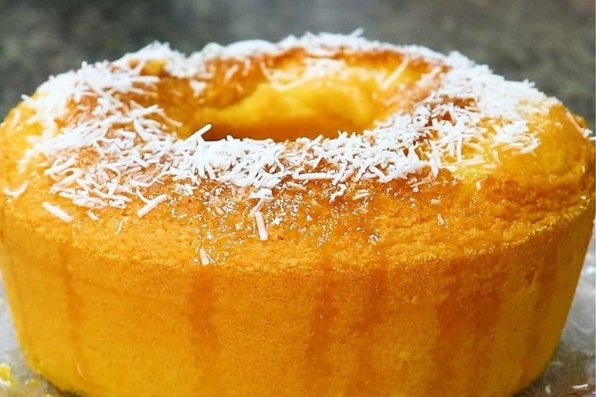

Doces · Tortas e bolos
Bolo de fubá e coco

Ingredientes
- 1 xícara de açúcar
- ½ xícara de manteiga ou margarina
- 3 gemas
- 1 vidro (200 ml) de leite de coco
- 1 xícara de leite
- 1 xícara de fubá
- 1 pacote (50 g) de coco ralado
- ½ xícara de farinha de trigo
- 1 colher (sopa) de fermento em pó
- 3 claras em neve firme
- Manteiga para untar
- 2 colheres (sopa) de açúcar
Modo de preparo
- Bata açúcar e manteiga; junte gemas, leite de coco e leite.
- Misture fubá, coco, farinha e fermento. Incorpore claras.
- Despeje em assadeira 20 × 30 cm untada. Asse 200 °C 20 min, depois 150 °C 5 min.
- Misture o leite de coco restante com 2 colheres de açúcar e regue o bolo quente. Esfrie, corte em quadrados e congele.
Observação
Desenforme em grade para evitar umidade. Congelamento: quadrados em assadeira com plástico, depois saco sem ar.